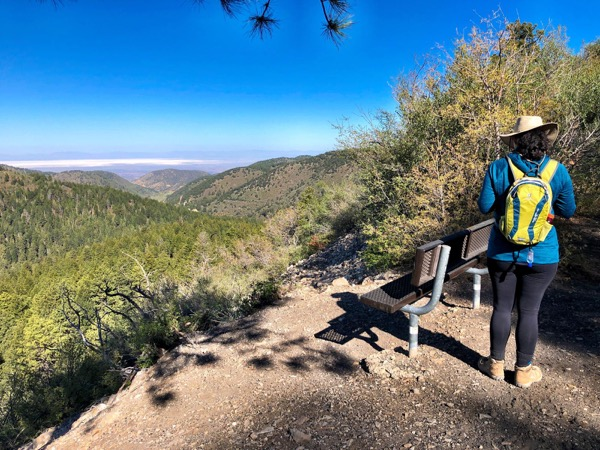

Hike Lincoln National Forest
NatureDozens of maintained trails thread aspens and spruce. Osha and the Mexican Canyon Trestle loop are the local favorites; Dog Canyon is the desert-to-summit challenge.
Free
Family loops
Hard climbs